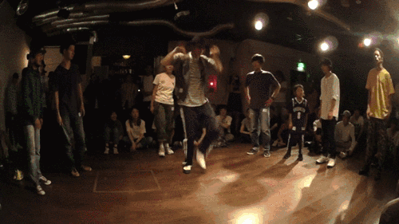
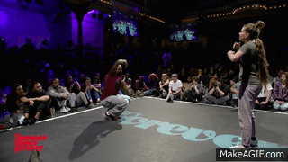

Хаус
Изначально House (хаус) – одно из направлений современной музыки. Стиль танца House определить очень просто – это то, что танцуют под музыку House. То, что есть в музыке, находит свое отражение и в танце – это высокая скорость, ритмичность, драйв. Это динамичные движения тела, характерные прыжки и быстрые движения ногами, своеобразный кач корпусом. Широкие, энергичные движения исполняются под короткие замедляющиеся, а затем ускоряющиеся фрагменты хауса.
Зародившись еще в 80-х годах предыдущего столетия, в Европе стиль House начал набирать популярность в 21 веке, постепенно набирая популярность наравне с хип-хопом. Этот танец привлекает своей особой манерой и динамикой, базируясь на музыкальных пристрастиях и умении понимать и интерпретировать хаус-музыку. Музыка Electro House ведет свое происхождение из фанк-музыки и впервые появилась в Чикаго, а сам танец House – это продукт андеграундных клубов Нью-Йорка, куда перебрались танцоры после закрытия хип-хоп вечеринок в связи с распространением насилия.
Хаус был рожден на основе базы Old School Hip-hop и множества элементов из других стилей. На сегодняшний день в хаусе выделяются различные разновидности: jacking (работа корпусом), footwork (работа ног), stomping (прыжковые элементы), lofting (работа в партере), a также stocking - игра с партнером. Но основу танца составляет именно индивидуальное восприятие музыки танцором, его чувства и эмоции – неслучайно первоначальное название стиль не имел и обозначался просто как Freestyle dancing.
Один из лучших танцоров Нью-Йорка Ejoe Willson считает, что «хayc oтличaeтcя oт хип-хопа тeм чтo, кoгдa тaнцyeшь хayc, ты пoдчиняeшь cвoе тeлo самой мyзыкe, а не мyзыкaльнoмy битy, как в хип-хопе».


.gif)